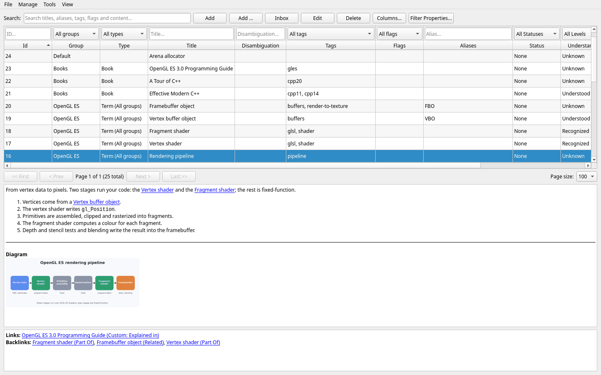

Getting started
Lexicon is running with a Default group ready for new items. You can create more groups as your knowledge base grows.
1. Create and manage groups
Groups are top-level buckets for items. Think of them as the volumes of your personal encyclopedia — for example C++, Databases, or Networking.
When the Group filter is set to All groups, new items go to Default unless the Type filter selects a type scoped to another group. You can select a group before adding an item.
- Open
Manage → Groups...from the menu bar. - Click Add to create a new group. Give it a short, unique name and an optional description. New groups start after existing groups.
- Use Edit to rename a group, change its description, or set its position. Lower positions appear first in group selectors; ties are sorted by name.
- Use Delete to remove a group you no longer need.
Deleting a group deletes its items Removing a group cascades to all items inside it, including their content, metadata, and links. There is no undo — back up first if unsure.
Start coarse A handful of broad groups beats dozens of narrow ones. You can always refine with tags later — they are much cheaper to reorganize.
2. Explore the main window

The main window is organized top-to-bottom:
| Area | What it does |
|---|---|
| Search and actions | Search across titles, disambiguations, aliases, tags, and flags; add, edit, or delete items; use Filter Properties... for key/value filters. |
| Item table | Filter each column in the row above its name, click a column name to sort, select a row to preview it below, or double-click to edit. |
| Pagination bar | Browse large result sets page by page with a configurable page size. |
| Content pane | Shows the selected item's Markdown rendered as HTML, its images below it, and a links/backlinks summary at the bottom. |
3. Create your first item
The main toolbar offers three ways to add an item:
Add— the quick path. The title is prefilled from your current search text, which is perfect for the "searched it, didn't exist, so let's create it" workflow.Add ...— the full dialog path, opening the complete item editor.Inbox— a title and a few plain lines, saved toDefaultwith the typeInbox. For the idea you want to keep now and file later; see Inbox.
Both actions assign the type selected above the Type column. A group-scoped type also determines the group when All groups is selected.
Recommended workflow:
- Select the target group above the Group column, or leave
All groupsselected to useDefaultwhen no group-scoped type is selected. - Click Add or Add ....
- Fill in the General tab:
Title(required), optionalType,Disambiguation,Status,Understanding, andPinned. If you select a type, enter its custom field values on the Values tab. Define types and their fields underManage → Types.... - Optionally add content, metadata, and links in the other tabs — or come back later.
- Click Save.
Everything about the editor tabs is covered in Editing items.
4. Working with large dictionaries
Lexicon is optimized for large datasets. The pagination bar keeps the table responsive no matter how big your lexicon grows:
| Control | Action |
|---|---|
<< First | Jump to the first page |
< Prev | Go one page back |
Next > | Go one page forward |
Last >> | Jump to the last page |
Page size | Choose how many items are shown per page |
Combined with search and filters, you can comfortably navigate thousands of items.